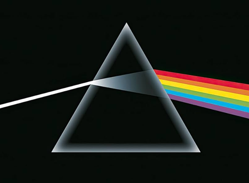
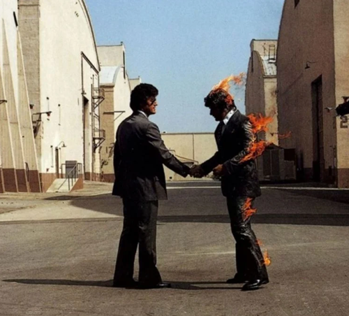
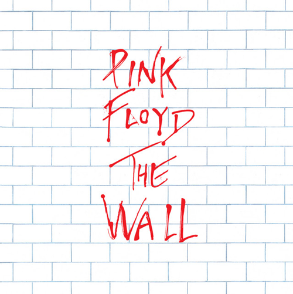
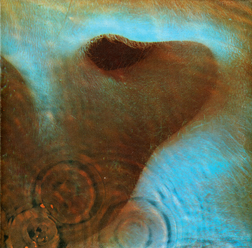
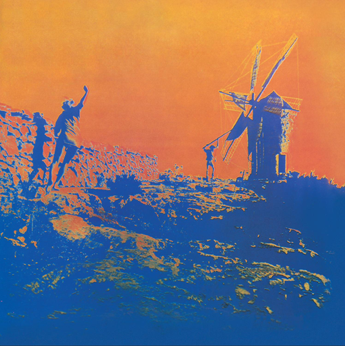
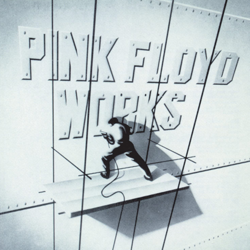

This site is a celebration of Pink Floyd — a band whose music didn’t just define an era, but reshaped how generations understand sound, emotion, and the human condition. From the cosmic explorations of Meddle to the existential pulse of The Dark Side of the Moon, their work has become more than albums; it’s a lifelong companion for anyone who’s ever felt the weight of time, the pull of madness, or the search for meaning.
This page is built by fans, for fans — a tribute to the art, the innovation, and the spirit of a band whose music continues to echo across decades. All content is shared for educational and historical appreciation, honoring the legacy of one of rock’s most visionary groups.






Works is one of the most unusual releases in Pink Floyd’s catalog — a U.S.-only compilation that feels less like a curated “greatest hits” and more like a time capsule of the band’s evolution. True fans know this album not for its cohesion, but for its quirky, almost accidental brilliance.
It’s the compilation that:
It’s not a concept album. It’s not a definitive collection. But it is a snapshot of Floyd’s strangest, most transitional moments — stitched together in a way that only makes sense to fans who know the band’s history.